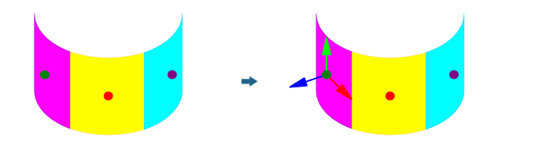
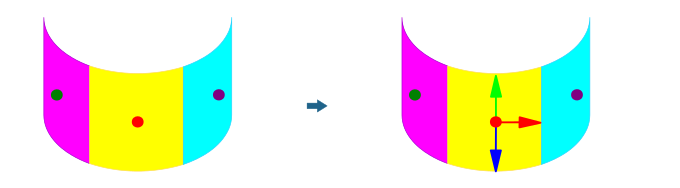

PrevNext
Create workplane on point on face
Create workplane at the point on a face. → → → | Advanced |
Create a workplane at the point on a face. The Z direction of the workplane is taken from the face normal vector of the face at the position of the point on the face.
Example 50.
Input: Face color: 255;0;255 | Point color: 0;128;0
Input: Face color: 255; 255; 0 | Point color: 255;0;0
Input: Face color: 0;255;255 | Point color: 128;0;128

No name is created for this new workplane. This is possible with Save workplane as.